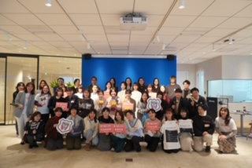
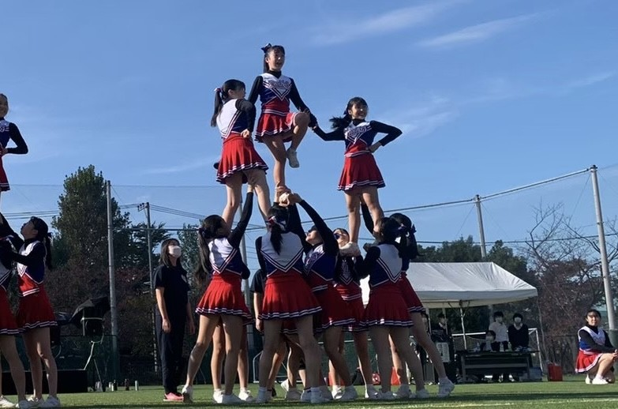
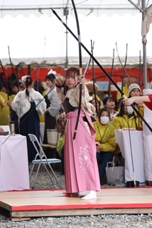
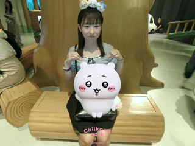

自己PR

未経験からプログラミングに挑戦
文系未経験ながら半年間の外部のプログラミング講座に挑戦。
最終課題ではAIとディベートができるWebアプリをチームで開発しました。
円滑な連携を大切にしながら取り組み、Progate賞を受賞しました。

笑顔の中に根性あり
中高6年間はチアリーディング部で活動していました♥
笑顔と根性には自信があります！
仲間と心を合わせて一つの演技を作り上げる楽しさを学びました。

大学からは弓道部に所属
弓を引くカッコよさに惹かれて入部
継続力と精神力を磨いてきました。
わたしのこと / About Me
氏名 山本彩華（やまもとあやか）
生年月日 2004年5月5日
大学 東京都市大学人間科学部人間科学科
趣味 お散歩・かわいいもの集め
Contact
ポートフォリオを見てくださってありがとうございます！
🔗 GitHub